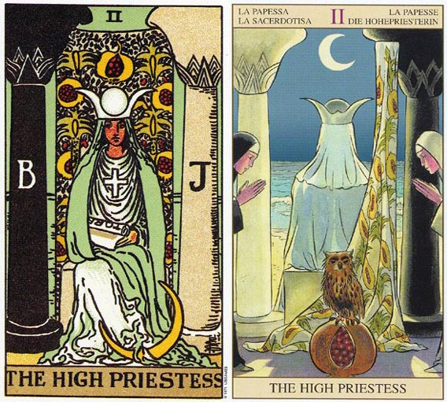

塔罗牌女祭司的牌面故事
女祭司这张牌，也有人称之为女教皇，若依韦特牌来看，女祭司才是较适当的翻译。因为，教皇是天主教领袖的专称，而天主教的领袖教皇是宗教领袖而非宗教皇帝。再者，教皇限定为男性，用女教皇称呼此牌不甚恰当（除非是专指中古欧洲那位女扮男装的丑闻教皇）。
塔罗牌女祭司解释
牌名：女祭司 TheHighPriestess
别名：女教皇 ThePapess
关键字：等待、智慧、理性、消极、静止
星相：月亮
四要素：水
1.女祭司代表理念萌芽，同时也暗示要相信直觉，探索内心深处。 逆位的代表你忽略了你的直觉和内心感受被纯粹的理智影响。
2.女祭司意味着：这是向内探索、沉思，或按兵不动的时刻。女教皇端坐着，脚旁边有一轮弯月，手上握着一个卷轴，胸前挂着十字架，左右各有一根柱子，中间有一块布幔。布幔遮住了一池水，虽然看不到，但她感觉得到它就在那里，只是不十分充分理解它的存在。这池水在星星、月亮和节制牌中可以看得更清楚。
3.脚畔的月亮代表她的想象力，以及她超越眼前的东西看向远处的能力。左边的柱子（J）代表阳性（逻辑、务实和力量）；右边的柱子（B）则代表阴性（想象、直觉、接受性及恻隐之心）。它们代表二元性和对立性；生命中相对的力量如果善加驾驭将会带来成功。字母B和J分别代表波耶兹（Boaz）和亚肯（Jakin），他们是耶路撒冷圣殿的两根柱子名字。波耶兹（Boaz）代表的是神秘和消极，而亚肯（Jakin）则代表行动和意识的理解。
4.女祭司代表一段退缩和消极反省的时期，但这足以使内在的力量复苏。这张牌可以形容内在的智慧已经达到某一种深度了。她可以代表直觉、洞察，或是自生活中退隐下来，好好思考某个问题或形势。
5.手上握着的卷轴，上面很明显的有TORA这四个字母，另外还有一个H的字母被遮住了。Torah包含了犹太人的律法，以摩西之言五卷的形式呈现出来。Torah中有着很多的智慧及知识，但有部分被遮掩了，这暗示智慧和知识隐藏在原文中。虽然高位的女教皇握着这份卷轴，但是她并不知道内容。当她遇到可以和她阴性能量互补的男人（阳性力量）时，这个男人会知道其中的意思，而她也可以告诉他，该卷轴是从何而来的。
6.女祭司必须动用她的直觉来了解她身后那池水中到底藏了什么。当她这么做时，她将会遍历所有的大阿尔克纳牌，直到星星牌时，她才可以直接碰到那池水。
7.女祭司和圣杯侍卫一起出现时，女祭司代表占星学上的双鱼座。双鱼座必须学习的部分课题是：将梦想转为实际。这包括位所渴望的事物（布幔上的种子为象征）播种，然后在着手进行，使这些梦想成真。
塔罗牌女祭司的牌面意义
1.女祭司手上的书其实是本律法之书，包含了传统的智慧，虽然在掌握之中，但亦隐闭了她内心的热情，坚持纯洁和真理，这一张牌和月亮牌有着密切的联系。
2.在两根希腊式的大石柱之间，女祭司端坐在其间。在她右边的黑色石柱，代表阴性的事物，如：想像、直觉、感性。而在她左边的白色石柱，则代表了阳性的事务，如：逻辑、实际、理性。在两根石柱之间拉起了一块布幔，布幔上布满了植物的种子。而在布幔之后有什么呢？只能靠感觉得知了。她是一位面如磁器般白皙的年轻女子，但自内心散发出来的沉静气质，令她显得成熟。她是月神的女儿，掌管着女性的生理机能和人类的情绪波动。她是拥有内在心灵智慧和得自梦境能量的处女神。她也是阴和阳、善与恶等二元性与对立性事物之间的守门人。就像是她本身所代表的数字一样，她能够在这两者之间自由地穿梭。她身着洁净的白色长袍，眉目低垂，似乎正在沉思。她的手中抱着一本厚厚的古书，但她并没有打开这本书阅读其中的内容，因为她是古老智慧的守护者，她并不是靠阅读书籍而获得知识的，她的所有智慧，皆是由探索内心的力量而获得的。
塔罗牌女祭司的牌义意义
1.女祭司的牌意，韦特的解释是：“奥秘，神秘学，未揭露的未来；求问者为男性时，代表关注他的女性；求问者为女性时，则代表求问者本身；此外，它也代表静默，坚持，智慧和科学。”逆位意义则是：“热情，精神上或肉体上的狂热，自大，肤浅的知识。”简而言之，这张牌可以代表各式各样的神秘学、东西方术数，也代表尚未完全显示的命运或智慧。在人物上此牌代表某位女性。塔罗牌女祭司解释
2.而静默会带来觉察和智慧，女祭司牌中的月亮、犹太人之书和水，都是智慧和直觉的象征。所以，这张牌有强烈的听从直觉的意义，而各种神秘学、超心理学和第六感也都与它有关，也代表了当事者有着这方面的潜力。除此之外，这样一个人物事注重心灵成长、宗教玄思的，而它也往往是逃避情感的。因此，这张牌对于感情的进展往往是不利的；对于命理玄学的学习则有极大之好处。但千万别忘了，这张牌也在提醒我们用直觉、听从直觉，建议是宜静不宜动。
3.女祭司的静，就像是两仪之中的阴，相对于魔术师的阳，代表着事物寂静，沉潜的一面。而女祭司这张牌的能力和智慧而不外露的。
塔罗牌女祭司解牌参考
正位解释：开发出内在的神秘潜力，前途将有所变化的预言，深刻地思考，敏锐的洞察力，准确的直觉。
倒转解释：过於洁癖，无知，贪心，目光短浅，自尊心过高，偏差的判断，有勇无谋，自命不凡。
塔罗牌女祭司正位置的意思
1.基本意思：知性、有良知、文静的象征、有敏锐的观察力、有研究精神。
2.金钱：决策重大的投资可获利。
3.人际关系：倾心交谈、体贴的好友、互相谅解。
4.爱情和婚姻：理智的感情生活、柏拉图式的恋情、心灵上的交往、冷淡的恋情、关系不明朗、以诗篇表达爱意。
5.工作和学业：有责任感、专心研究、拥有展现专业技术的机会、求知欲、考运佳、与教育相关的行业、评论家。
6.All：理解能力高、冷静、洞察力和先见之明。
女祭司 － 正位详批
她是一位拥有强大心灵能量的女子；她凭藉着直觉去判断是非，藉由潜意识的探讨去获得智慧。她对于人生事物有很深刻的体认，但她无法用语言表达出来。她总是觉得在她的人生中，隐藏着一件神秘之事，但她无法明确的察知，只能藉由梦境与回忆去寻找答案。 她的工作步调一时缓慢了下来，但只要她找出了一个新的工作方式，效率便能提高；加薪、升职、新的工作机会随之而来。 她是一位寡言安静，态度较为冷淡的女性，对两性关系并没有太大的渴求；她往往将情感转移到其他领域，例如工作、义工、艺术创作等。 在理财方面，她必须靠自己的努力，去充分了解个人的收入和支出习惯，深入探讨各种投资理财方法的利与弊，运用个人的智慧去处理自己的财产，绝对不能依赖他人，如此才能累积财富。 在健康方面，她的个人特质尚不明显，因而她必须时时倾听身体的需要，注意生活中的种种暗示，以获得身心健康。塔罗牌女祭司解释
塔罗牌女祭司逆位置的意思
1.基本意思：缺乏理解力、粗心大意、自我封闭、精神紧张、神经质、闹情绪。
2.金钱：不断浪费、没有计划的花费。
3.人际关系：受到冷漠的对待、受人嫉妒、恶意中伤、自闭、易得罪人。
4.爱情和婚姻：没有结果的单恋、洁癖、独身主义、任性、晚婚、没趣的女性。
5.工作和学业：固执、不专一、无知、懒惰、考试失败。
6.All：气色不好、与朋友争执、孤独。
女祭司 － 逆位详批
她一直觉得自己的人生有些不对劲，但是她却无法表达出来；其实，那是因为她并没有静下心来，好好地反省，去倾听自己内在心灵的需要。她应该善用属于她的女性直觉和想像力，去了解问题之所在，并寻求解答。但她并没有这样做，她自视太高，自命不凡，这些情绪蒙闭了她的心灵，使她逞强好斗，常做出偏差的判断。她在工作上，总是表现出能力很强的样子，其实那只是虚张声势罢了！事实上，她常会因为受到挫折而半途而废，以致于她的职位和薪资始终无法如她所愿地提升。对于金钱的使用，她并没有好好地规划，又把投资理财的工作交给不太可靠的亲友或投顾公司，因而有入不敷出、投资亏损的情况发生。她的态度太过高傲矜持，放不下身段去向心仪的人表白，也使心仪她的人望之却步，以致青春蹉跎。而在两性关系上，她对伴侣的各方面要求太高，带给对方相当大的压力，以致于两人之间的关系不和谐，气氛紧张。也由于她的态度傲慢，个性好强，给自己的生活造成很大的压力，因而引发肠胃病，以及贫血等健康问题。塔罗牌女祭司解释
倒立的女祭司
1.当女祭司以倒立当时出现时，依然可以代表双鱼座的人。它也可能暗示着：在暂时离群索居，或经过一番内心的发展之後，再度返回人生的一段时期。或许你已经度过了一段独处期，并将你的能量导入心灵的成长上，而你再度面对人生，以试炼你的新理念及理解的日子也已经到了。
2.它也可能是在描述你忽略了直觉，而喜欢运用头脑来解决问题。或许你需要倾听，需要听一听某些事物。而倾听你内在的自我，或你周边的事物，可以获得你达成目标的方法。塔罗牌女祭司解释
3.高位女祭司倒立时，可能意味你没有办法倾听你内在的声音，或你内在的知识是没有办法转化成行动。这个时候应当出去走走，认识新朋友，因为刚认识的人可以帮你介绍新的可能以及机会。例如，你可能会因此而找到新工作或新伴侣，或者得到崭新的理解。
4.以目前而言，内在发展的时候已经结束了，而且透过积极的寻找和他人的合作，会让你有更多的收获。
塔罗牌女祭司大体上的意义
1.女祭司代表去思考可以导致实际结果的构想。这并不是一张代表具体事物的牌，而是一张代表可能性的牌。我们每个人都在我们的人生当中持续的耕耘和收获，而女教皇就是散播那些种子或理念的行动。塔罗牌女祭司解释塔罗牌女祭司解释
2.女祭司暗示你应该要相信你的直觉，因为在这一点上，有些东西你可能看不见。高位的女教皇是一张代表精神和心灵发展的牌。它代表了向内心探索的一段时期，以便为你人生的下一个阶段播种，或者去消化你在肉体的层次上所处理的事情。
塔罗牌女祭司两性关系上的意义
1.在两性关系分析当中，女教皇可能代表一个双鱼座的人;或者可能意味着在你得以接收到这份关系给予你的种种之前，你需要先反求诸己。接受性、被动以及内在的发展，都是这张牌的意涵。
2.有时候女教皇暗示一种拥有高度精神或心灵发展的关系，你们俩人可以一同学习、成长和发展。
塔罗牌女祭司爱情
正位
1.你们的关系看过去有点太冷了，双方的交集和接触并不多，即使在相处也仅仅是安静地坐着，一起看书，又或者吃饭而已。你们之间话题太少，可能本身双方也都比较偏向内向，当然或许你们自己会觉得这样很安逸很好。
2.对人感情想法：在你/他看来对方是一个很安静，稍微有点内向话不多的人，很温柔又有种知书达理的感觉。如果对方是男性，在你/他看来，会稍显女性气质。不过还好对于这样的人你/他并不会觉得厌烦。塔罗牌女祭司解释
3.建议：和他相处，如果你是个“花瓶”那绝对不行。他是个讲究内涵的人，所以在闲暇时间你需要多看书多学习对应的技能，这样让你在他面前显得有内涵有水准。同时如果你希望你们的关系能有进一步的发展，你得学着弄点小花样了，一起去游乐园又或者去露天酒吧疯一把都会是给爱情加热的不错方法
逆位
1.你们的爱情有些稍显飘忽不定，有时候双方你侬我侬很是亲密，而有些时候又显得冷冷淡淡。从某种角度来讲你们的关系说好也好说不好也不好，不够稳定使得你们之间一旦出现问题就很容易破裂结束。而既冷又热，又可以让你们的感情不至于平淡无奇。
2.对人感情想法：在你/他心里，对方并不是一个非常合适的恋人人选，至少在你/他看来和其心中的那个人还是有一定差距的。或许是行为举止上，也或许是内涵上给人感觉有缺乏。同时在相处中你/他也会感觉到有一些不适和不舒服的地方。塔罗牌女祭司解释
3.建议：你首先需要解决的是双方相处中不稳定的方面，可以试着多找一些双方共同的话题和共同的喜好，这比较能够拉近你们的关系。同时在两人相处中你需要再主动一些，作为主导者引导者，想靠他来主动绝对是不太现实的。
塔罗牌女祭司在工作方面的启示
1.女教皇是教师，天生具表演、观察与辨识的才能。
2.人一生中，总需要有几个好老师。最重要的，需要有个启发我们认识“我是谁”的良师。如果只求活着，有钱有名有势力地活着，女教皇还用不着出场。
3.但是，以比较高级的灵魂观点看来，光是光鲜地活着，是不够的。多少人在职场、战场、情场、官场杀伐一生，无限空虚——那空虚不是不来，只是迟早。
4.如果你厌烦了短视、快捷方式，欢迎向内索求。如果你不满意只是聪明伶俐，长袖善舞，欢迎静下心来。
5.反省不代表退让，沉思不代表庸懦，处之以静，往往能灵光闪现，酝酿下一阶段的成功。有时候，半桶水比没有水最更糟糕的。有时候，附庸风雅比不爱文艺是更糟糕的。有时候，乱思想比不思想更可怕；抱持顽固而错误的想法，比承认不解世事更难进化。
6.经常，自以为能解释一切的科学家是可怕的，自以为是“神的使者”是可怕的，自以为“真理与公义代言人”是绝对不负责的。至少，真理中有一条叫做“谦虚”。如同“脑袋水泥化”不是哪一个领域的专利，习惯“黑箱作业”故弄玄虚的领导更得小心提防。
7.搞小圈圈、知识不肯下放、信息不分享，组织无法呈现网络化学习——都算一种“知识暴力”。垄断是暴力，刚愎自用是暴力。迷信数据资料，不重视直觉感性，偏左脑的认知模式，也是暴力。
8.你有没有太过冷峻的倾向？你有没有对感情流露嗤之以鼻的习惯？你是不是自认观察敏锐犀利、绝对公正客观？你知不知道你正陷入最可笑的一种主观？你了不了解自己受感官多大的限制和误导?你能不能体会别人和你一样，为这些限制和误导所苦？
9.女教皇牌的反面，正要告诫我们这些。
塔罗牌女祭司(伟特塔罗篇)
1.在伟特牌中，这张牌为The HighPriestess，为女祭司。里面的人物身穿蓝和白衣坐在海水旁的一个立方体石头上，海水代表潜意识，石头则是炼金术的原材料。但海水被双柱之间的布幔遮挡。两根柱子从左到右看分别石Levi的Boaz和Jakin，这两根柱子在“1Kings(旧约圣经的列王纪)”中有记载，说到这两根柱分别伫立于所罗门神殿的北门和南门。Boaz和Jakin在希伯来语中的意思不详，但一般都认为Boaz意为“力量”，Jakin意为“建立”。这两根柱子的符号在蔷薇十字会和共济会的仪式中都很重要，相当于中国的阴和阳，分别代表暗与光、阴性和阳性。
2.女祭司身后的布幔上的图案是石榴和棕榈，代表丰富与多产，这个符号同样也可以在所罗门神殿的雕刻图案中找到。当我们拿那些石榴所构成的图形来跟卡巴拉生命之树来比较时，我们就会发现棕榈代表路径、石榴代表源质，而生命之树中较低层的源质在女祭司牌中被藏于女祭司身后的位置，那么在金色曙光组织里的那些发到每名学员手里的课程中就有一副图像，画的是一个人，这个人的身体覆盖住了生命之树较低几层的源质，就和女祭司图中表现的一样。这样的图呈现的是一个魔法修行，而人体所构成的则是生命之树的中柱。
3.在金色曙光系统中，这张牌与月亮相联系，在女祭司图中我们能发现一轮月牙在她的脚旁。女祭司的胸前还有交叉的十字符号，这代表的是着于太阳，站于月亮，启示录中圣母玛利亚的形象。女祭司的头冠是Isis的头冠，同样也是由太阳和月亮组成，可见伟特和史密斯作出了玛利亚和Isis的原型。女祭司一手握着卷轴，其为律法，有TORA字母。塔罗牌女祭司解释
4.女祭司的编号为2，2可以算是第一个真正的数字，所以2为多重数中最最简单的一个数字，在塔罗符号中所体现的也是最简单二元思想。两个点可以连成一条线，而这一条线可以将事物分割成两半，所以2可以代表分割、对立和不协调。
5.既然2代表二元分割思想，那么它也就意味着万物的阴阳属性，同时也代表物质界与意识界的最基本的联系，所以在中世纪2也被视为有冥想之意。
6.在塔罗中，数字2的正面和负面都在女祭司牌里体现，比如代表二元对立属性的双柱。另外，女祭司也代表了守持秘密智慧的神秘女神，因为基于2联系俗世与意识界的思想，女祭司也是把握着揭示俗世与意识界联系的冥想方法。在东西方的数字理念中，偶数代表阴性，奇数代表阳性，所以数字2作为第一个偶数同样也赋予了女祭司阴柔特质的含义。
7.总的来说，女祭司这张牌代表内在的、隐秘的、深奥的信仰经验，或者神秘学经验。真正的神秘学是什么？真正的神秘学是我们越是学的多，就越会发觉自己对它不了解。胎儿在母亲的子宫里的发展就是这样一种神秘学，所以这就是为什么一直以来人们都认为女人是神秘学的最佳象征。而其最简单的形式就是直觉。
塔罗牌女祭司(古塔罗篇)
1.古塔罗中的女祭司(The HighPriestess)是叫Papesse，意为女教皇。在说古塔罗的这部分里，我就姑且将这张牌称为女教皇。
2.我们看到女教皇和教皇是世俗统治者中的第一张牌和最后一张牌，世俗意为有限的世界，跟无限与永恒相对，这与这些世俗统治者的名称相匹配因为他们都无法战胜时间。女教皇是塔罗中比较有争议的牌中的其中一张。
3.在十六世纪新教改革之后，女教皇和教皇这两张牌有时就会被其他牌所代替。比如十七世纪的比利时牌中，女教皇和教皇变成了西班牙的船长和酒神，十九世纪瑞士的1JJSwiss塔罗里他们变成了Juno和Jupiter(罗马神夫妻)。天主教是极端父权主义，所以女人也可成为女教皇的这种思想被视为异端学说。
4.十二世纪，西多会的修士Joachim of Flora(1168－1202)冒出一个想法，就像St.Augustine一样，他将所有的历史的发展视为阶层的提升，每一级对应三合一中的一个方面。在第一个时代父时代，物质世界被创造出来，制定了律法，圣经旧约写成；在子时代，基督出生并为了世界而英勇牺牲自我，圣经新约写成；之后Joachim想象了一个未来时代，新时代，由神圣的灵魂支配，所以在新时代里，教会将会解散，这就是一个基督所许诺的黄金时代，遍地生爱，每个人都能直接与上帝沟通。
5.虽然Joachim并没有被当时视为异端学说者。但他的想法使一些异教组织受到鼓励，他们都翘首盼望着新时代的到来。有一个叫做Guglielmites的组织，这个组织的创建者是女的，叫做Gugielma，死于1281年的米兰，她生前被她的追随者们认为是具备神圣灵魂的人。她预言新时代将于1300年到来，那时会有许多女教皇。当1300年真的到来之际，威斯康提家族的Manfreda被推选为新的女教皇，但这个教会遭到了灭门，并且在发现Manfreda已经死了的情况下还把她推上了火刑台。Moakley认为威斯康提－斯佛扎塔罗中的女教皇牌画的就是Manfreda，这种解释是有证据支持的，那就是威斯康提-斯佛扎塔罗的图像细节，其中女教皇牌画的人所穿的修女服饰就是Manfreda穿的，还手持一根十字架，象征对基督的信仰。塔罗牌女祭司解释
6.在后来一些塔罗牌中，女教皇经常被成为Joan教皇，Joan教皇这个名字取自十九世纪的一名女子，她将自己打扮成男的加入了神职人员的行列，并且最后提升为教皇。在这个故事中中，Joan的女性身份后来被发现并被处死。现代研究者已经找到了确凿证据来证明Joan教皇这个故事的真实性。实际上女教皇这张牌在各式塔罗大牌中的位置总是居于教皇之前，这说明教皇要大于女教皇。在上面说到的两个故事中，Manfreda和Joan都没有超越男教皇，也许塔罗大牌的女教皇是在说这两位人物的故事。一个比较保守的解释就是塔罗中的女教皇是代表了文艺复兴时期的教会和信仰。但事实上，马赛塔罗的排列次序中皇后、皇帝和教皇都要大过女教皇则说出了这种解释的缺陷。
7.1499年威尼斯的一个神秘的冒险传奇写作可以作为比较合适的文艺复兴艺术作品，名为Hypnerotomachia，这个故事说叙述了一个明叫Pilophilo的人被引导去在毁灭的古老城市中寻找爱人、追求神秘学目标。将近在故事的最后，在维纳斯的女祭司面前，他和他的爱人得以结合。在木刻图里有这样一幅图像，一位身穿制服头戴三重头冠的女祭司坐在座椅上，与塔罗中的女祭司的形象具有明显的一致性。这幅对Pilophilo的描绘是文艺复兴时期最有美丽且最有影响力的。虽然这副木刻图出于1499年，但它的风格是用当时的风格取代古时风格来。因此虽然木刻图中的女祭司是维纳斯的女祭司，但是她的服饰则是当时教皇的穿着。
8.在威斯康提-斯佛扎塔罗中的女教皇一手持有十字架，其他塔罗基本上都是代表维纳斯的女祭司，也就是那幅木刻图里的形象。如果是这样的话，那么她就代表古时的异教信仰，教皇则代表基督教胜于异教。所以在塔罗的排列中，皇后和皇帝看上去就像远离异教、顺从教皇的权威，但是教皇后一张的代表丘比特的恋人牌则胜过之前所有的牌，丘比特是维纳斯的儿子，虽然教皇使女教皇的级别降低了但是女教皇貌似还是笑到了最后，因为即使是教皇都不能使自己脱离欲望。而神秘学家后来Papess解释为古代宗教信仰的女祭司显然是无法成立的。我们甚至还能从文艺复兴时期的艺术中找出关于Isis的相关图像。
9.教皇牌代表宗教世界的统治者，他带着三重冠坐在座椅上。除非有的塔罗牌中将教皇这张牌替换了——比如1JJSwiss塔罗，否则这个图像存在于所有塔罗中。在马赛塔罗中有两个人面向教皇站在教皇跟前。教皇被认为是俗世的最高统治者，要知道当时只有教皇有资格为皇帝冠冕、也只有教皇才有资格为皇帝册封这一荣誉。在现实中，教皇的权力也不容罗马皇帝挑战，历史上也记述了两者之间的争斗但最终还是教皇获得了最高等级。而且教皇在宗教界占据支配地位的时候就是塔罗牌被创造出来的时代——那时新教改革还未发生。就像“TriumphodiFortuna”那幅图中所显示的那样，教皇坐于世界之巅。不过在Lull的小说Blanquerna中，真正代表精神上的权威的人不是教皇，而是隐士，因为教皇还需要接受恋人的挑战。
塔罗牌女祭司解释网友问答
塔罗牌女祭司解释问题一：塔罗牌女祭祀和女教皇的区别？ 网友回答：女祭司就是女教皇。在某些牌叫法不一样。我习惯叫女祭司。主要吸收容易把女教皇和女皇搞混。所以解释成女祭司了。 塔罗牌女祭司解释问题二：塔罗牌中女祭司一牌的正位在感情预测中代表什么含义？ 网友回答：女祭司意味着：这是向内探索、沉思，或按兵不动的时刻。在两性关系分析当中，女祭司可能代表一个双鱼座的人； 或者可能意味着在你得以接收到这份关系给予你的种种之前，你需要先反求诸己。 接受性、被动以及内在的发展，都是这张牌的意涵。 有时候女祭祀暗示一种拥有高度精神或心灵发展的关系，你们俩人可以一同学习、成长和发展。 塔罗牌女祭司解释问题三：塔罗牌中的女祭司真的会不孕吗 ？ 网友回答：不是的，每张牌都有很多角度的解释，就算你占卜的是关于怀孕，也不会说【抽到女祭司就会不孕】，就算真的要用到【不孕】这个解释，还的看是正位还是逆位呐！ 塔罗牌女祭司解释问题四：塔罗牌问对方对我有好感吗一张牌女祭司正位请问怎么解读？ 网友回答：可能意味着在你得以接收到这份关系给予你的种种之前，你需要先反求诸己。接受性、被动以及内在的发展，都是这张牌的意涵。 有时候暗示一种拥有高度精神或心灵发展的关系，你们俩人可以一同学习、成长和发展。 塔罗牌女祭司解释问题五：塔罗牌女祭司在职业方面怎么解释？ 网友回答：在职业上：若女祭司为职业本身，表示该职业属于神圣、智慧、内修的职业，如神侍从、法官、律师、护士、科学家等；若女祭司为职业的选择方面，表示选择该职业会使得工作者向冷静、内向、正义、信仰方面转变。 塔罗牌女祭司解释问题六：塔罗牌中女祭司一牌的正位在感情预测中代表什么含义？ 网友回答一：女祭司意味着：这是向内探索、沉思，或按兵不动的时刻。 在两性关系分析当中，女祭司可能代表一个双鱼座的人； 或者可能意味着在你得以接收到这份关系给予你的种种之前，你需要先反求诸己。 接受性、被动以及内在的发展，都是这张牌的意涵。 有时候女祭祀暗示一种拥有高度精神或心灵发展的关系，你们俩人可以一同学习、成长和发展 网友回答二：塔罗牌大阿卡那的第2张“女祭师”，她坐宝座上，看来自在平静，有些高深莫测。她拥有灵性，可以让隐藏的力量和秘密显现，进而给予人们这些知识。所以当牌面正立时显示的是宁静、直觉、含蓄以及谨慎。 网友回答三：感情上有含蓄谨慎的倾向，首先通过被动的接受，然后得出自己的答案。追求并拥有高度精神层面的恋爱，对感情的发展有相当的掌握。 塔罗牌女祭司解释问题七：寻求解读塔罗牌逆位女祭祀？我和一男人纠结了十年，到现在为止，他未娶，我没嫁。这十年来，分分合合无数次，但是合的时间都不长久，中间我们各自都有其他的感情生活。而如今我们都到结婚的年龄，而且还是迫在眉睫的那种，但是近2年来，我们也曾经认真的谈过是否该以结婚为前提好好谈谈，但是每次都是因为他的不冷不淡而分开。而最近，他居然搬家到我附近，我的心又凌乱了。塔罗牌抽了一张，想知道我们的结果。因为确实这样纠结实在太累，求一高手解读下，逆位女祭司。（只抽了一张，只想知道结果）谢谢！ 网友回答：只抽一张牌，那就是小天狼星牌阵了，可以预测短期的未来。逆位的女祭司表示着你和对方都没有想好，也就是说你们彼此之间可能有缘无分，所以个人认为不要再等下去了，与其如此还不如彼此说明白，不要再如此的暧昧下去，因为你们都已经是谈婚论嫁的年龄了，所以不要再耽误彼此。认清现实。果断一点，你们都会幸福的，我也祝愿你们幸福。